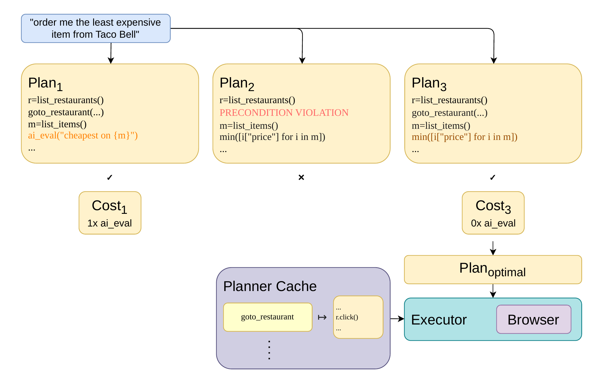
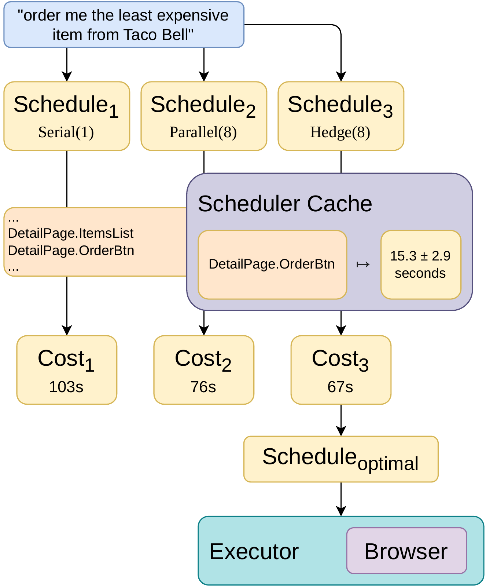
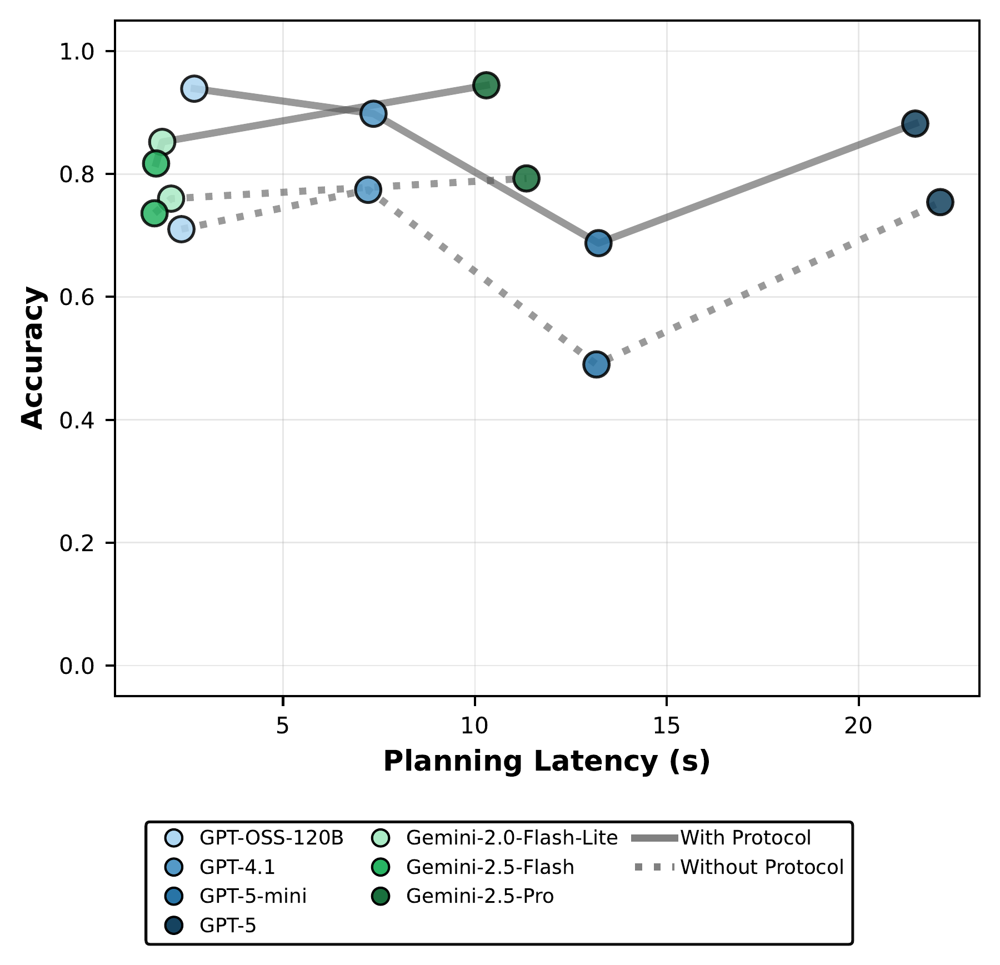
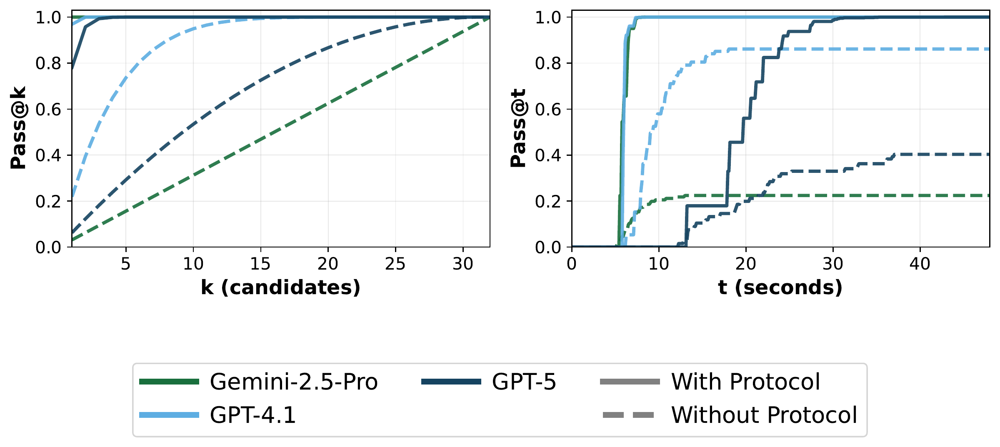
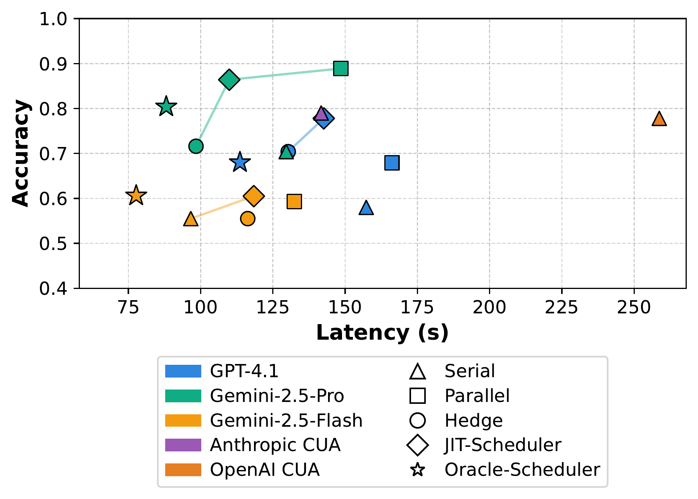

Abstract
Computer-use agents automate tasks specified with natural language, such as “order the cheapest item from Taco Bell,” by generating sequences of tool calls in a browser. Current implementations follow a sequential observe–reason–act loop, where each iteration requires an LLM call. This leads to high latency and frequent errors from incorrect tool use.
We present Agent JIT Compilation, a system that compiles task descriptions directly into executable code that may include LLM calls, tool calls, and parallelization. Our approach comprises a cost-optimizing planner that generates, validates, and ranks candidate programs; a cost-aware scheduler that chooses between serial, parallel, and hedged execution; and a tool protocol that specifies preconditions and postconditions to check tool use. Across five applications, JIT-Planner achieves a 10.4× speedup and a 28 percentage-point accuracy improvement over Browser-Use. In a separate evaluation, JIT-Scheduler achieves a 2.4× speedup and approximately 9 percentage-point accuracy improvement over OpenAI CUA.
Motivation
Computer-use agents translate natural-language requests into actions in a browser, but completing those requests with low latency and high reliability remains challenging. Below we make three observations that motivate our focus on latency-optimizing planning and scheduling.
1. Low-level actions force agents to repeatedly solve routine interactions.
Primitive actions such as clicking coordinates and typing text provide broad coverage of browser states,
but completing even familiar interactions may require many model-mediated steps. Prior work on tool
discovery and reuse has shown that recurring interaction sequences can instead be exposed as
application-level tools such as list_restaurants and add_to_cart.
Once these reusable tools are available, the agent can operate over a smaller, higher-level action space,
but must still decide how to compose them efficiently.
2. Much of execution is deterministic once semantic decisions are made. Suppose an agent has decided to list menu items and select the least expensive one. The data flow between these operations does not necessarily require another model decision. Nevertheless, a conventional observe–reason–act loop invokes the model at every step, adding inference latency and execution-time nondeterminism. Representing execution as code can remove these unnecessary intermediate model calls while retaining inference where semantic judgment is actually required. However, a task may admit many valid programs with different tool sequences, retained LLM calls, and control-flow structures. The challenge is to determine which candidates compose the tools correctly and which valid program is likely to execute most efficiently, without running every alternative.
3. No single execution strategy is best across tasks. Independent subtasks can benefit from parallel execution, while short or tightly dependent tasks may be faster serially. When interaction latency varies substantially across attempts, redundant execution with request hedging can instead reduce tail latency. Which strategy performs best therefore depends on task dependencies, coordination overhead, and the latency and reliability of the underlying interactions. Execution strategy is thus a task-specific scheduling decision rather than a fixed system configuration.
These observations motivate Agent JIT Compilation, which treats a natural-language instruction as input to an optimization process. JIT-Planner optimizes what program to execute: it searches over compositions of reusable tools, checks their validity, and selects by estimated cost. The tool protocol supplies preconditions and postconditions for checking composition before execution. JIT-Scheduler optimizes how to allocate workers: it selects an execution strategy using learned latency distributions. We evaluate these two optimization problems separately.
JIT-Planner: selecting a valid, low-cost program
The planner translates a task into a program containing tool calls, ordinary computation, and any required LLM inference. Its tool cache contains reusable implementations synthesized offline from successful interaction traces. Multiple workers generate candidate programs in parallel. Once the requested number of valid candidates is available, the planner returns the one with the lowest estimated cost. The planner can also use validation errors to refine unsuccessful candidates; the main evaluation uses one iteration per worker (Mmax = 1), with serial retries studied in a separate ablation.
Example: ordering the cheapest item
Consider the task “Order the cheapest item from Taco Bell.” There are several ways to implement it, and a shorter program is not necessarily correct. The example below shows three candidates generated by JIT-Planner.


- Plan 1 is valid but makes an unnecessary LLM call. It opens the restaurant, reads the
menu, and asks
ai_evalto find the cheapest item. Comparing numeric prices does not require a language model. - Plan 2 is invalid. It reads menu items before opening the restaurant detail page. The
call to
list_itemstherefore violates the tool’s precondition, even though the program uses fewer LLM calls. - Plan 3 is valid with lower estimated cost. It opens the correct page and uses
minto select an item by price. This replaces a runtime LLM call with a deterministic computation.
Checking whether tools compose
Input and output types describe what data a tool accepts and returns. Preconditions and postconditions
describe the application state in which it can be used. Both matter: a well-typed call to
list_items is invalid if the browser is still on the restaurant list.
For example, the following simplified contracts expose the navigation dependency. Here,
rId identifies the selected restaurant:
goto_restaurant(rId) # post: page = detail, selectedRestaurant = rId
items = list_items() # pre: page = detailThe first call establishes the state required by the second. In Plan 2 above,
list_restaurants leaves the browser on the list page and the navigation call is missing.
The checker therefore rejects list_items before executing it. This catches a state-flow
error that checking argument and return types alone would miss.
JIT-Planner checks types and propagates declared state facts through the program’s control-flow graph. Each tool call must have its preconditions satisfied by the current state. Static validation establishes consistency with the declared contracts; optional runtime predicates test those assumptions against the live application, for example by checking that the expected menu is visible after navigation.
Ranking the valid candidates
Validity determines which programs are admissible. Cost estimation determines which admissible program
to execute. Plans 1 and 3 both satisfy the navigation dependency, but Plan 1 invokes ai_eval
to compare prices, whereas Plan 3 computes the minimum directly. The planner assigns Plan 3 a lower cost.
The cost model accumulates weighted tool and LLM-call costs over the control-flow graph and increases the penalty with loop nesting depth. An LLM call inside a loop can be repeated many times, so its placement matters as well as its presence. These scores estimate relative cost among valid plans; they are not predictions of execution time in seconds.
JIT-Scheduler: matching execution strategy to the task
No single execution strategy minimizes latency across tasks. Independent subtasks can favor parallelism, short dependent operations can favor serial execution, and high-variance interactions can favor request hedging. JIT-Scheduler therefore treats worker allocation as a task-specific optimization problem under a fixed worker budget.
JIT-Scheduler maintains its own cache of latency distributions learned offline from interactions with page elements. Trace steps are associated with their eventual target element, so the recorded wall-clock cost includes the agent’s exploratory work to locate and interact with that element. These distributions measure agent interaction latency, rather than simply the duration of a DOM operation, and provide an empirical proxy for interaction difficulty and variability across attempts.
For each candidate strategy, the scheduler predicts which elements workers will interact with and samples their latency distributions using Monte Carlo estimation. Serial latency accumulates along one execution; parallel latency depends on the slowest required worker and any sequential portion; hedged latency depends on the first completed attempt. Coordination overhead is included when selecting the strategy with the lowest estimated mean latency.
Examples of task–schedule compatibility
- Serial: “How much is a matcha croissant and a regular iced matcha latte?” Both values can be read from one page. Starting extra workers can cost more time than it saves.
- Parallel: “Get the first three reviews from each vendor.” Different workers can read different vendors independently. Completion depends on the slowest required subtask.
- Hedge: “Buy any taco.” When a worker may get stuck on a difficult interaction, multiple workers can attempt the same task. The system takes the first valid completion and terminates the remaining workers.


Evaluation
We evaluate on 37 tasks across five applications: Dashdish, Gomail, and Omnizon from REAL, and GitLab and Reddit from WebArena. Each REAL application has three selected benchmark tasks and six manually curated tasks, balanced across scheduling strategies. Each WebArena application has five randomly selected tasks and is evaluated with the planner only. Each configuration is run three times; task success is checked by the benchmark harness.
Planner and scheduler results below are separate experiments. Latency includes online planning and execution; one-time offline cache construction is reported separately.
End-to-end planner results
Averaged across models, JIT-Planner reduces mean latency from 122.1 seconds to 11.7 seconds compared with Browser-Use, a 10.4× speedup. Providing cached tools alone reduces latency to 80.1 seconds. Tool reuse alone leaves substantial inference overhead: Browser-Use +cache still invokes an LLM between tool calls, while JIT-Planner compiles their composition into code, retaining inference where semantic judgment is needed.
| Setting | Browser-Use | Browser-Use +cache | JIT-Planner | |||
|---|---|---|---|---|---|---|
| Latency ↓ | Accuracy ↑ | Latency ↓ | Accuracy ↑ | Latency ↓ | Accuracy ↑ | |
| Model | ||||||
| GPT-4.1 | 150.1 | 61% | 105.2 | 88% | 15.4 | 90% |
| Gemini-2.5-Flash | 100.3 | 59% | 69.3 | 81% | 7.2 | 94% |
| Gemini-2.5-Pro | 115.9 | 77% | 65.8 | 86% | 12.6 | 97% |
| Application | ||||||
| Dashdish | 118.8 | 65% | 62.8 | 100% | 14.5 | 100% |
| GitLab | 144.7 | 49% | 69.7 | 67% | 9.9 | 87% |
| Gomail | 133.8 | 63% | 94.6 | 80% | 10.4 | 96% |
| Omnizon | 113.9 | 76% | 86.8 | 84% | 15.5 | 89% |
| 81.3 | 72% | 82.7 | 89% | 4.3 | 93% | |
| Task cardinality | ||||||
| C-Low | 101.5 | 64% | 65.2 | 86% | 9.4 | 94% |
| C-Medium | 119.0 | 75% | 91.2 | 85% | 13.7 | 94% |
| C-High | 169.0 | 58% | 96.2 | 84% | 14.3 | 92% |
| Task length | ||||||
| T-Short | 70.2 | 73% | 51.5 | 88% | 7.1 | 98% |
| T-Medium | 134.9 | 59% | 86.8 | 93% | 13.0 | 92% |
| T-Long | 195.3 | 62% | 121.2 | 70% | 18.4 | 89% |
The gains vary across applications. Reddit tasks often compile to deterministic tool sequences and show an 18.9× speedup. Omnizon tasks can require runtime semantic judgment, so their programs retain LLM calls and show a smaller 7.4× speedup. With identical cached tools, GPT-5.4 CUA remains 1.5–2.4× slower than JIT-Planner at comparable accuracy across task complexity tiers on the 27 REAL tasks.
Planning accuracy and efficiency
Across the three models in the paper’s aggregate statistical analysis—GPT-4.1, Gemini-2.5-Flash, and Gemini-2.5-Pro—protocol enforcement raises the valid-plan rate from 77.1% to 90.6%. This analysis pools all plan-generation tasks and candidate samples for those models. Individually, Gemini-2.5-Pro improves from 79% to 96%, and GPT-4.1 from 78% to 91%. These measure plan validity, which is distinct from end-to-end task success.


The benefit is particularly pronounced on long-horizon tasks: across the nine T-Long tasks, Gemini-2.5-Pro’s valid-plan rate rises from 58% to 93%. As a case study, on one 19-step GitLab task, the protocol increases Gemini-2.5-Pro’s Pass@3 from 9% to 100%: the probability of obtaining at least one valid plan within three candidates. With eight parallel workers, the probability of finding a valid plan reaches approximately 100% within eight seconds. This focused task analysis illustrates why checking tool contracts also reduces time spent generating unsuccessful plans.


Scheduling results: task–schedule compatibility
The scheduler experiments test whether choosing a schedule for each task improves on a fixed policy. The 27 REAL tasks include nine per application, curated to include three for each latency-optimal strategy: Serial, Parallel, and Hedge. These oracle labels use GPT-4.1 measurements averaged over three runs. This selected task set exposes the different regimes in which each strategy is useful.
Task cardinality alone does not determine the compatible schedule. Counting how many restaurants offer delivery processes ten restaurants but is fastest under Serial in the paper’s oracle analysis; inspecting four coffee-maker product pages is fastest under Parallel. The number of elements is only part of the cost: interaction structure, worker overhead, and latency variation also affect the choice.
On the 27 REAL tasks with a four-vCPU budget, JIT-Scheduler with Gemini-2.5-Pro achieves 109.9 seconds at 86.4% accuracy, compared with OpenAI CUA’s 258.7 seconds at 77.8%. This is a 2.4× speedup and an 8.6 percentage-point accuracy gain, rounded to 9 in the paper.


Fixed strategies expose different latency–accuracy trade-offs. For Gemini-2.5-Pro, Hedge is faster than JIT-Scheduler (98.4 seconds) but less accurate (71.6%). Parallel is more accurate (88.9%) but slower (148.5 seconds). JIT-Scheduler adapts the strategy per task rather than committing to one policy globally.
Limitations
The approach is best suited to repeated work on familiar applications. Offline tool synthesis takes 25–90 minutes per application, and scheduler trace collection takes 25–45 minutes; these costs are amortized across subsequent tasks. UI changes can invalidate cached tools, and stochastic behavior such as rate limiting can force a fallback to generic tools, reducing the latency benefit. The evaluation covers a selected task suite rather than the full benchmarks; desktop and mobile environments were not evaluated.
Beyond web agents
The same approach could extend beyond browsers when a task can be expressed as a composition of reusable operations with explicit preconditions and postconditions. An agent would compile a natural-language request into candidate programs, reject programs whose operation contracts do not compose, and rank the remaining candidates by estimated cost. Scheduling is a separate problem: once a program is selected, the system decides how to allocate workers to its independent or redundant work.
Data processing. Consider an agent asked to compute weekly revenue by region from raw tables.
The agent may generate a pipeline such as load → deduplicate → join → aggregate. Each operator
exposes preconditions and postconditions over the logical data state: for example, aggregation may require
unique transaction IDs and an attached region field, while deduplication and joining establish those
properties. The planner rejects pipelines whose operator contracts do not compose and ranks the remaining
plans
using estimated execution cost. This representation is similar to dataflow systems such as
Dryad,
which express computations as DAGs of operators connected by data channels. After selecting a valid DAG, the
scheduler decides how to execute it—for example, how many workers to assign to independent partitions—using
measured operator costs.
Build and test. Consider an agent asked to find the commit that caused
test_checkout to fail. It could generate a program that checks out revisions, builds them, and
runs
the target test. Contracts make the dependency explicit: a test for revision r requires an
artifact
built from r, and a successful build establishes that artifact. The planner can therefore reject
invalid workflows and choose among different search programs, such as bisection or evaluating several
candidate
revisions concurrently. Build systems such as
Bazel
already expose dependency graphs and execute ready actions in parallel. Given a selected search program, the
scheduler could decide how many revisions to evaluate concurrently or whether to redundantly execute unusually
slow, isolated builds or tests.
Runtime checks complement static validation. Contract checking establishes that a generated
program is consistent with the declared behavior of its operations; it does not guarantee that those
declarations
hold at runtime. A build action, for example, may declare that it produces an artifact for revision
r, but execution must still verify that the artifact was actually produced. Similarly, a data
transformation may require a particular schema that must be checked against the data encountered at runtime.
Static and runtime checks therefore serve different roles: the former reject invalid compositions before
execution, while the latter detect violations of the assumptions on which the plan depends.
Redundant execution requires commit semantics. Hedging is straightforward for read-only work but more subtle when workers can mutate shared state. Multiple workers may perform speculative work concurrently, but at most one should commit an externally visible effect. Data-processing systems address a related problem using mechanisms such as MapReduce's atomic output commit; other domains may rely on isolation, idempotent operations, or explicit coordination around the commit point. Parallel execution similarly must preserve dependencies through shared mutable state.
Extending Agent JIT Compilation to these domains would therefore require domain-specific contracts, runtime checks, and cost models. Repeated workloads are especially suitable because tool synthesis and latency profiling can be amortized across many tasks. Evaluating these extensions remains future work.
BibTeX
@inproceedings{winston2026agentjit,
title = {Agent {JIT} Compilation for Latency-Optimizing Web Agent Planning and Scheduling},
author = {Winston, Caleb and Wang, Ron Yifeng and Mirhoseini, Azalia and Kozyrakis, Christos},
booktitle = {Proceedings of the 43rd International Conference on Machine Learning},
pages = {135161--135186},
year = {2026},
volume = {306},
series = {Proceedings of Machine Learning Research},
publisher = {PMLR},
url = {https://proceedings.mlr.press/v306/winston26b.html}
}